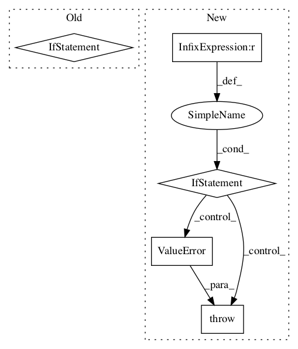

1c75176947730de8322acf6ad996096625e92e3a,tensorflow_lattice/python/lattice_layer.py,Lattice,call,#Lattice#Any#,469

Before Change
// Wrap this constant into pure op since in TF 2.0 there are issues passing
// tensors into control_dependencies.
with tf.control_dependencies([tf.identity(self.lattice_sizes_tensor)]):
if self.units == 1:
// Weights shape: (batch-size, ..., prod(lattice_sizes))
// Kernel shape: (prod(lattice_sizes), 1)
return tf.matmul(interpolation_weights, self.kernel)
else:
// Weights shape: (batch-size, ..., units, prod(lattice_sizes))
// Kernel shape: (prod(lattice_sizes), units)
return tf.reduce_sum(
interpolation_weights * tf.transpose(self.kernel), axis=-1)
def compute_output_shape(self, input_shape):
Standard Keras compute_output_shape() method.
if isinstance(input_shape, list):
input_shape = input_shape[0]
After Change
// Wrap this constant into pure op since in TF 2.0 there are issues passing
// tensors into control_dependencies.
with tf.control_dependencies([tf.identity(self.lattice_sizes_tensor)]):
if self.interpolation == "simplex":
return lattice_lib.evaluate_with_simplex_interpolation(
inputs=inputs,
kernel=self.kernel,
units=self.units,
lattice_sizes=self.lattice_sizes,
clip_inputs=self.clip_inputs)
elif self.interpolation == "hypercube":
return lattice_lib.evaluate_with_hypercube_interpolation(
inputs=inputs,
kernel=self.kernel,
units=self.units,
lattice_sizes=self.lattice_sizes,
clip_inputs=self.clip_inputs)
else:
raise ValueError("Unknown interpolation type: %s" % self.interpolation)
def compute_output_shape(self, input_shape):
Standard Keras compute_output_shape() method.
if isinstance(input_shape, list):
input_shape = input_shape[0]
In pattern: SUPERPATTERN
Frequency: 3
Non-data size: 5
Instances
Project Name: tensorflow/lattice
Commit Name: 1c75176947730de8322acf6ad996096625e92e3a
Time:
Author: null
File Name: tensorflow_lattice/python/lattice_layer.py
Class Name: Lattice
Method Name: call
Project Name: deepmind/sonnet
Commit Name: e900c4a5e41f3b6cfc2025402937570022d99d03
Time:
Author: null
File Name: sonnet/src/nets/mlp.py
Class Name: MLP
Method Name: __call__
Project Name: tensorflow/agents
Commit Name: b5ae1c6bde39f5130c975992198f1f8ee5200f9a
Time:
Author: null
File Name: tf_agents/policies/categorical_q_policy.py
Class Name: CategoricalQPolicy
Method Name: __init__